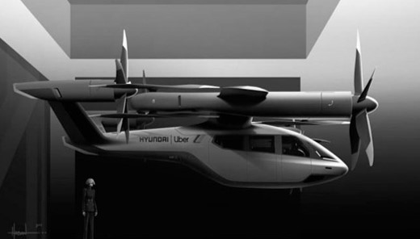
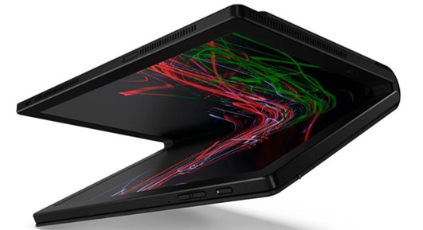

28 de agosto de 2020
Taxis voladores 100% eléctricos.
Si bien aún es sólo un diseño, el S-A1 de Hyundai y Uber es un vehículo volador
capaz de viajar a altitudes de entre 300 y 600 metros, con una velocidad máxima
de 290 km/h y una autonomía de 100 kilómetros. La idea es que, en un futuro no
demasiado lejano, Hyundai fabrique los vehículos y Uber se ocupe de la puesta en
marcha del servicio conectando a los conductores con los pasajeros.
28 de agosto de 2020
Dispositivo que entrena a tu cerebro durante el día para
que duermas mejor durante la noche.
Urgonight es una banda que se coloca en la cabeza y se conecta a
una aplicación móvil de descarga gratuita. La idea es realizar
durante 20 minutos los ejercicios que propone la app en función
de la actividad de las ondas cerebrales detectada por varios
sensores. Se trata de un entrenamiento para el sueño que saldrá
a la venta en el segundo trimestre de este año al precio de 450 euros.
28 de agosto de 2020
Bicicleta para pedalear sobre el agua.
Desarrollada por la compañía neozelandesa Manta 5, esta bicicleta acuática
se mantiene a flote gracias a una especie de alas de fibra de carbono que
actúan como si fueran las de un avión. A medida que los usuarios pedalean,
el motor eléctrico activa la hélice que empuja el vehículo hacia adelante.

28 de agosto de 2020
Ordenador portátil y plegable de Lenovo.
Además de contar con 5G, compatibilidad con Dolby Audio, memoria RAM de 8 GB
y almacenamiento de 1 TB, el ordenador Lenovo ThinkPad X1 Fold puede adoptar
la forma de un libro o la de una pantalla plana completa de 13.3 pulgadas. Se
empezará a comercializar en la segunda mitad de 2020.